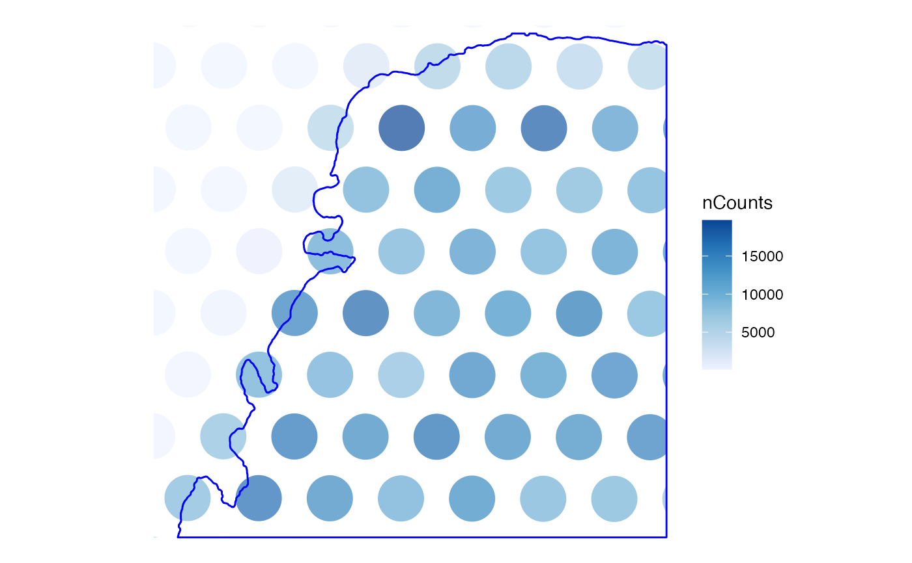
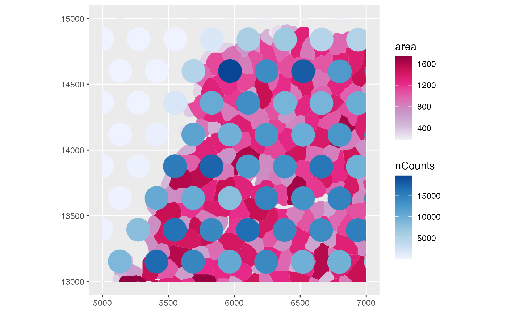
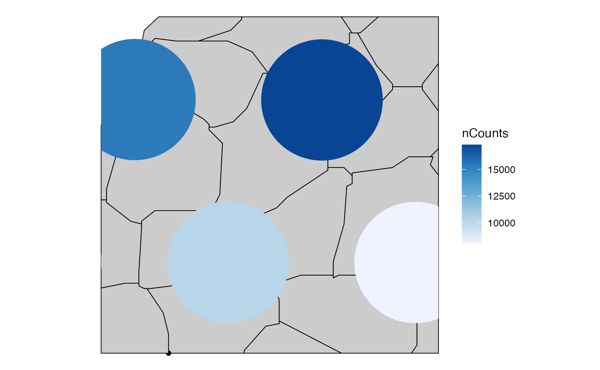
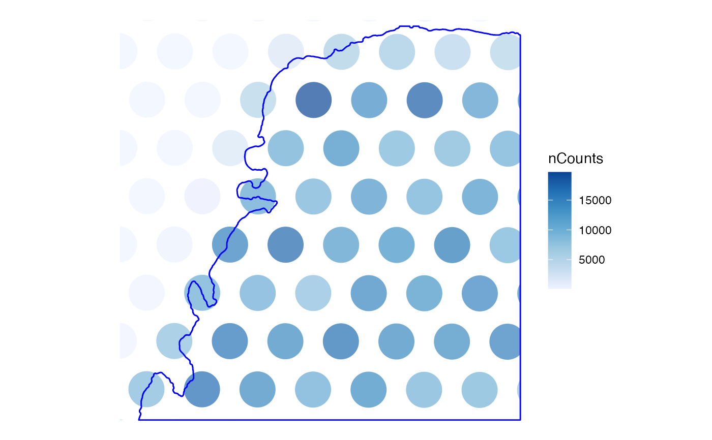
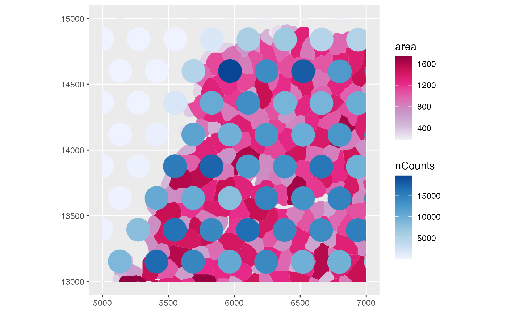
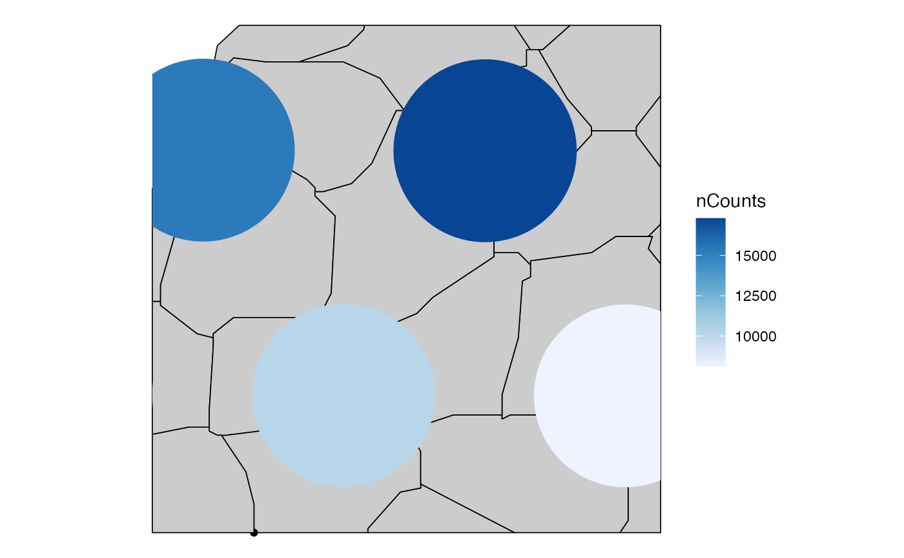

Unlike Seurat and ggspavis, plotting functions in this package
uses geom_sf whenever applicable.
Usage
plotSpatialFeature(
sfe,
features,
colGeometryName = 1L,
sample_id = "all",
ncol = NULL,
ncol_sample = NULL,
annotGeometryName = NULL,
annot_aes = list(),
annot_fixed = list(),
exprs_values = "logcounts",
bbox = NULL,
image_id = NULL,
maxcell = 5e+05,
aes_use = c("fill", "color", "shape", "linetype"),
divergent = FALSE,
diverge_center = NA,
annot_divergent = FALSE,
annot_diverge_center = NA,
size = 0.5,
shape = 16,
linewidth = 0,
linetype = 1,
alpha = 1,
color = "black",
fill = "gray80",
swap_rownames = NULL,
scattermore = FALSE,
pointsize = 0,
bins = NULL,
summary_fun = sum,
hex = FALSE,
dark = FALSE,
...
)Arguments
- sfe
A
SpatialFeatureExperimentobject.- features
Features to plot, must be in rownames of the gene count matrix, colnames of colData or a colGeometry.
- colGeometryName
Name of a
colGeometrysfdata frame whose numeric columns of interest are to be used to compute the metric. UsecolGeometryNamesto look up names of thesfdata frames associated with cells/spots.- sample_id
Sample(s) in the SFE object whose cells/spots to use. Can be "all" to compute metric for all samples; the metric is computed separately for each sample.
- ncol
Number of columns if plotting multiple features. Defaults to
NULL, which means using the same logic asfacet_wrap, which is used bypatchwork'swrap_plotsby default.- ncol_sample
If plotting multiple samples as facets, how many columns of such facets. This is distinct from
ncols, which is for multiple features. When plotting multiple features for multiple samples, then the result is a multi-panel plot each panel of which is a plot for each feature facetted by samples.- annotGeometryName
Name of a
annotGeometryof the SFE object, to annotate the gene expression plot.- annot_aes
A named list of plotting parameters for the annotation sf data frame. The names are which geom (as in ggplot2, such as color and fill), and the values are column names in the annotation sf data frame. Tidyeval is NOT supported.
- annot_fixed
Similar to
annot_aes, but for fixed aesthetic settings, such ascolor = "gray". The defaults are the same as the relevant defaults for this function.- exprs_values
Integer scalar or string indicating which assay of x contains the expression values.
- bbox
A bounding box to specify a smaller region to plot, useful when the dataset is large. Can be a named numeric vector with names "xmin", "xmax", "ymin", and "ymax", in any order. If plotting multiple samples, it should be a matrix with sample IDs as column names and "xmin", "ymin", "xmax", and "ymax" as row names. If multiple samples are plotted but
bboxis a vector rather than a matrix, then the same bounding box will be used for all samples. You may see points at the edge of the geometries if the intersection between the bounding box and a geometry happens to be a point there. IfNULL, then the entire tissue is plotted.- image_id
ID of the image to plot behind the geometries. If
NULL, then not plotting images. UseimgDatato see image IDs present.- maxcell
Maximum number of pixels to plot in the image. If the image is larger, it will be resampled so it have less than this number of pixels to save memory and for faster plotting. We recommend reducing this number when plotting multiple facets.
- aes_use
Aesthetic to use for discrete variables. For continuous variables, it's always "fill" for polygons and point shapes 21-25. For discrete variables, it can be fill, color, shape, or linetype, whenever applicable. The specified value will be changed to the applicable equivalent. For example, if the geometry is point but "linetype" is specified, then "shaped" will be used instead.
- divergent
Logical, whether a divergent palette should be used.
- diverge_center
If
divergent = TRUE, the center from which the palette should diverge. IfNULL, then not centering.- annot_divergent
Just as
divergent, but for the annotGeometry in case it's different.- annot_diverge_center
Just as
diverge_center, but for the annotGeometry in case it's different.- size
Fixed size of points. For points defaults to 0.5. Ignored if
size_byis specified.- shape
Fixed shape of points, ignored if
shape_byis specified and applicable.- linewidth
Width of lines, including outlines of polygons. For polygons, this defaults to 0, meaning no outlines.
- linetype
Fixed line type, ignored if
linetype_byis specified and applicable.- alpha
Transparency.
- color
Fixed color for
colGeometryifcolor_byis not specified or not applicable, or forannotGeometryifannot_color_byis not specified or not applicable.- fill
Similar to
color, but for fill.- swap_rownames
Column name of
rowData(object)to be used to identify features instead ofrownames(object)when labeling plot elements. If not found inrowData, then rownames of the gene count matrix will be used.- scattermore
Logical, whether to use the
scattermorepackage to greatly speed up plotting numerous points. Only used for POINTcolGeometries. If the geometry is not POINT, then the centroids are used. Recommended for plotting hundreds of thousands or more cells where the cell polygons can't be seen when plotted due to the large number of cells and small plot size such as when plotting multiple panels for multiple features.- pointsize
Radius of rasterized point in
scattermore. Default to 0 for single pixels (fastest).- bins
If binning the
colGeometryin space due to large number of cells or spots, the number of bins, passed togeom_bin2dorgeom_hex. IfNULL(default), then thecolGeometryis plotted without binning. If binning, a point geometry is recommended. If the geometry is not point, then the centroids will be used.- summary_fun
Function to summarize the feature value when the
colGeometryis binned.- hex
Logical, whether to use
geom_hex. Note thatgeom_hexis broken inggplot2version 3.4.0. Please updateggplot2if you are getting horizontal stripes whenhex = TRUE.- dark
Logical, whether to use dark theme. When using dark theme, the palette will have lighter color represent higher values as if glowing in the dark. This is intended for plotting gene expression on top of fluorescent images.
- ...
Other arguments passed to
wrap_plots.
Details
In the documentation of this function, a "feature" can be a gene (or whatever
entity that corresponds to rows of the gene count matrix), a column in
colData, or a column in the colGeometry sf data frame
specified in the colGeometryName argument.
In the light theme, for continuous variables, the Blues palette from
colorbrewer is used if divergent = FALSE, and the roma palette from
the scico package if divergent = TRUE. In the dark theme, the
nuuk palette from scico is used if divergent = FALSE, and the
berlin palette from scico is used if divergent = TRUE. For
discrete variables, the dittoSeq palette is used.
For annotation, the YlOrRd colorbrewer palette is used for continuous variables
in the light theme. In the dark theme, the acton palette from scico is
used when divergent = FALSE and the vanimo palette from scico
is used when divergent = FALSE. The other end of the dittoSeq
palette is used for discrete variables.
Each individual palette should be colorblind friendly, but when plotting
continuous variables coloring a colGeometry and a annotGeometry
simultaneously, the combination of the two palettes is not guaranteed to be
colorblind friendly.
In addition, when plotting an image behind the geometries, the colors of the image may distort color perception of the values of the geometries.
theme_void is used for all spatial plots in this package, because the
units in the spatial coordinates are often arbitrary. This can be overriden
to show the axes by using a different theme as normally done in
ggplot2.
Examples
library(SFEData)
library(sf)
sfe <- McKellarMuscleData("small")
#> see ?SFEData and browseVignettes('SFEData') for documentation
#> loading from cache
# features can be genes or colData or colGeometry columns
plotSpatialFeature(sfe, c("nCounts", rownames(sfe)[1]),
exprs_values = "counts",
colGeometryName = "spotPoly",
annotGeometryName = "tissueBoundary"
)
 # Change fixed aesthetics
plotSpatialFeature(sfe, "nCounts",
colGeometryName = "spotPoly",
annotGeometryName = "tissueBoundary",
annot_fixed = list(color = "blue", size = 0.3, fill = NA),
alpha = 0.7
)

# Make the myofiber segmentations a valid POLYGON geometry
ag <- annotGeometry(sfe, "myofiber_simplified")
ag <- st_buffer(ag, 0)
ag <- ag[!st_is_empty(ag), ]
annotGeometry(sfe, "myofiber_simplified") <- ag
# Also plot an annotGeometry variable
plotSpatialFeature(sfe, "nCounts",
colGeometryName = "spotPoly",
annotGeometryName = "myofiber_simplified",
annot_aes = list(fill = "area")
)

# Use a bounding box to zoom in
bbox <- c(xmin = 5500, ymin = 13500, xmax = 6000, ymax = 14000)
plotSpatialFeature(sfe, "nCounts", colGeometryName = "spotPoly",
annotGeometry = "myofiber_simplified",
bbox = bbox, annot_fixed = list(linewidth = 0.3))

# Change fixed aesthetics
plotSpatialFeature(sfe, "nCounts",
colGeometryName = "spotPoly",
annotGeometryName = "tissueBoundary",
annot_fixed = list(color = "blue", size = 0.3, fill = NA),
alpha = 0.7
)

# Make the myofiber segmentations a valid POLYGON geometry
ag <- annotGeometry(sfe, "myofiber_simplified")
ag <- st_buffer(ag, 0)
ag <- ag[!st_is_empty(ag), ]
annotGeometry(sfe, "myofiber_simplified") <- ag
# Also plot an annotGeometry variable
plotSpatialFeature(sfe, "nCounts",
colGeometryName = "spotPoly",
annotGeometryName = "myofiber_simplified",
annot_aes = list(fill = "area")
)

# Use a bounding box to zoom in
bbox <- c(xmin = 5500, ymin = 13500, xmax = 6000, ymax = 14000)
plotSpatialFeature(sfe, "nCounts", colGeometryName = "spotPoly",
annotGeometry = "myofiber_simplified",
bbox = bbox, annot_fixed = list(linewidth = 0.3))
